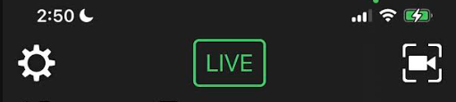
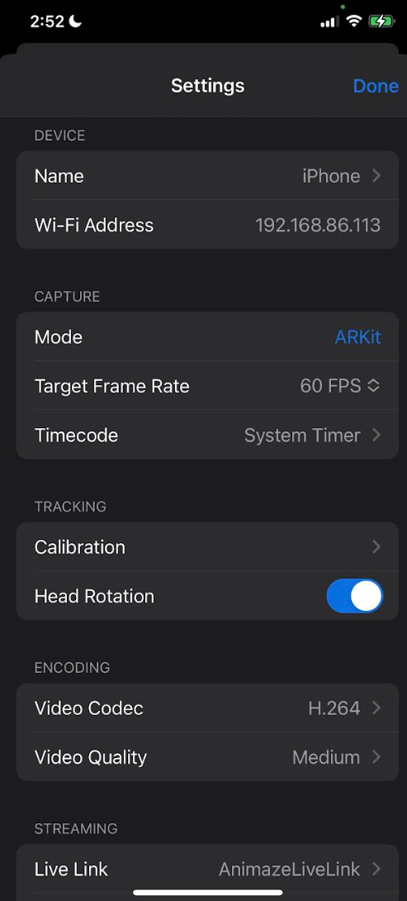
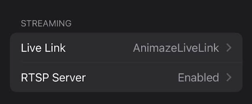
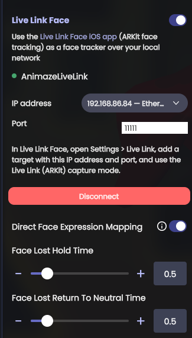

Live Link Face - Tracker
Starting with version 1.27.12778, Animaze supports more external tracking options, including Unreal’s Live Link Face App.
Usage
Make sure you have installed Live Link Face on your phone, and that both your Animaze PC and phone with the Live Link App are on the same local network.
Connections are supported over Wi-Fi or a wired network—USB cables are not supported.
If using Wifi, to avoid congestion, use a modern Wifi standard; the more recent, the better.
The experience is similar to Animaze’s own iOS app, except that Live Link Face does not transmit head positions, only head rotations and expressions.
You need to configure a few key settings in the Live Link app.
1. Go to Settings (cogwheel icon in the upper left-hand corner of the Live Link app)

2. Make sure “Capture” > “Mode” is set to “ARKit”

3. In the “Streaming” section, make sure you have defined your Animaze Live Link target.
In the Streaming section, select Live Link to configure your target. If none exists, tap Add Target and enter the IP address and port displayed in the Animaze PC UI (found in the PC Animaze app under Select Trackers > Live Link Face - make sure it is toggled on).

Set a name that you will remember under “Subject Name”.
Then set the local network IP address and port under “Targets”, “Add Target”. Source the IP address and port info from the Animaze PC UI (Select Trackers > Live Link Face; they will be visible after you toggle it on), and copy it over to the phone.

Configuration is now complete. Note that the IP address shown in the PC app is read-only; simply copy it over to your phone.
You can, however, change the default port number as you wish if the default one is already taken. Make sure the same value that you set on the PC is also in your phone.
Now, if you go to the main Live Link Face App and set the Animaze target that you just defined, as soon as you start data capture, if you are using the Animaze LiveLink Tracker in the PC version of Animaze and the IP address and port are correct, you should see the motion in Animaze on your PC as well.
Note: If you see no motion on your PC, make sure there are no local network firewalls or security rules blocking the connection between the two apps or devices.